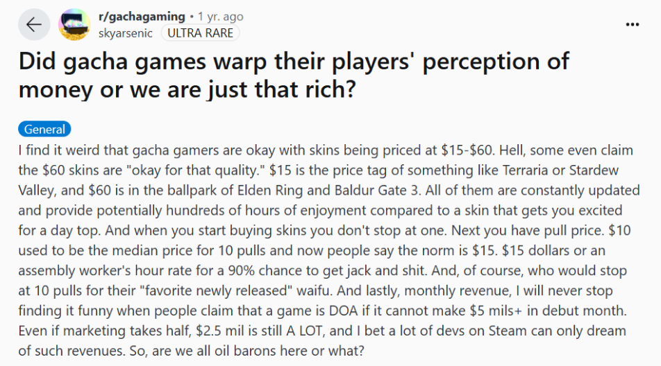
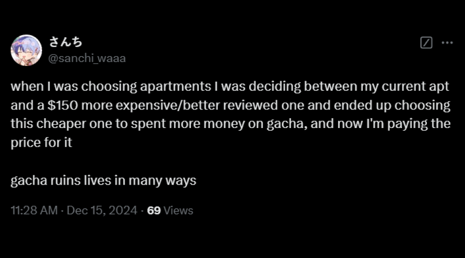

Do Games Purposely Have Shit Bad Drop Rates for Their Gacha Systems to Profit off Their Players?
But is it really because of the drop rates?
What is a "Gacha?"
Definition
Noun - /ˈɡɑː.tʃə/
A type of computer game, especially one played on a mobile phone, in which users can pay to get a new
character, ability, object, etc. at random (= by chance, without intentionally choosing which). Games
that rely on randomized in-game transactions are known as Gacha games
Gacha mechanics tend to make players spend real-world money on in-game currency.
There are a lot of gacha games out there!
Some are obvious...
Genshin Impact, probably the game people think of when they think "Gacha."
Honkai Star Rail, made by the same company that created Genshin! They have basically the same
gameplay and gacha mechanic.
Cookie Run, part of a long-time franchise! Their first game was released maybe 15 years ago.
AFK Arena, you've probably seen an ad for this game on YouTube.
Pokemon Masters—Nintendo will always find a way to make a profit.
However, any games with lootboxes or a card-collecting mechanic also technically
fall under gacha.
League of Legends has lootboxes where you can get skins, emotes, and much more!
FIFA makes players gamble to get player cards to build stronger teams.
Some Roblox developers include lootboxes in their games that require Robux to purchase.
COD has a supply box system where players can open them to try to get rare weapons.
TCGP builds on the popularity of collecting Pokemon cards.
You can purchase packs in-game to get rarer cards.
So, what's the issue?
It's frustrating for players to spend a lot of money on an item that isn't guaranteed
Generally, the gacha mechanic is introduced in a free-to-play game so the developers
can still make a profit. The items that players receive can be purely cosmetic
(doesn't add anything to the gameplay) or actually provide a boost for the player (e.g., more attack, new skills).
Because it's not guaranteed, it creates a disparity between players who don't spend money on the game
and players who do. It's also frustrating for players to see game developers seemingly caring more about
profit than their player base.
This has always been an issue! It stands true today too.
The gacha games market is also expected to have a compound annual growth rate of 8.8%
The market is just going to continue growing exponentially. Since it is likely to reach around 985.7
million by 2032, it's safe to say that gacha games will continue getting released.
As a player, it's frustrating dealing with gacha mechanics!
While in-app purchases are not required, some games use tactics to make them appealing (e.g., timers before
the deal runs out, a "sale" on the product). On top of that, it's very easy to fall behind in these
games compared to players who are able to spend money to progress. As such, gacha games
have a reputation for only existing as a quick cash grab.
By making it so there's only a small chance for players to get rare items, these companies
encourage players to spend money in hopes of increasing those chances. However, there's no clear
proof of this. The question arises whether the drop rates offered by these games actually affect
how players spend on the game or if it is other factors that players may not have considered.
So, is profit the reason why so many games nowadays include a gacha system?
Let's look at the performance of the 50 most profitable mobile games that contain a gacha system in 2024.
Looking at the Data
What are the 50 most profitable mobile games in 2024? (up until October)
The following is a breakdown of these games, including their genres and the years they were
released.
Filter the data by clicking on the genre list or the years!
In 2024, 14 out of the 50 most profitable games fall under the role-playing genre, indicating that a lot of spenders
tend to prefer games in that genre. Additionally, at least 10 games were released in 2024. This could mean that some players are simply
spending to consume all the available content in the game as quickly as possible. It may also be
due to recency bias, where players feel more inclined to spend their money on games they have just begun playing.
There seems to be a linear trend regarding the release years of the games. The newer the game, the more likely it is to remain on the most profitable chart. This is likely because the older the game, the more bored players might become, feeling that
they have experienced everything the game has to offer.
Let's look at the best-performing game in 2024
While there is no specific trend, it's clear that the revenue gacha games generate
tends to fluctuate a lot. Some months may be significantly more profitable than others, even when the rates
offered by the games have not changed. It is the content that changes, which indicates
that it isn't the rates that affect how players spend, but the content they produce.
So, let's look at Honkai Star Rail
Part 1 - What is Honkai Star Rail?
It's a free-to-play role-playing gacha video game developed and
published by HoYoverse. It is a turn-based game, featuring the main character, the Trailblazer,
traveling across planets via the Astral Express to help and connect the worlds while resolving
disasters caused by "Stellarons" and other third parties. The game was publicly released internationally on
April 26, 2023.
This game is technically part of HoYoverse's previous series, Honkai. It's the fourth installment
in the Honkai series, utilizing some characters from Honkai Impact 3rd and gameplay
elements from their other very popular game, Genshin Impact.
Part 2 - What happened in March 2024?
Two characters were released this month: Jing Yuan and Sparkle.
Sparkle made her debut in this update
With this being the first time Sparkle was released, players were more willing to spend money
to obtain her, hoping she would be one of the most effective characters in the update.
So, who is Jingyuan?
Jingyuan is currently the most popular Honkai Star Rail character based on popularity polls held by HoYoverse, the publisher.
There are a lot of reasons why players love him.
He appears frequently in the story and is a useful character for gameplay.
Many players find him attractive and want him on their team.
He has always been a popular character.
The publisher also announced 3 new characters to be released soon
With Sparkle and Jingyuan's release making the 2.0 update, there are several more characters
introduced by the publishers to keep the game exciting and entice players into spending money to get these
new characters. This could be due to players enjoying their aesthetic, or hoping they'll be a good character
for
gameplay. The release announcement likely caused some players to immediately spend money to start
"saving" for these characters in advance.
The 3 character release announcements on March 16th, 2024
So, how does other games compare to Honkai? (or with each other)
Select 2 games you want to compare with each other here
Is there a correlation between drop rates and revenue?
Based on Honkai: Star Rail's performance, it seems that revenue is affected by the characters popularity more
than anything. However, does drop rates still play a part in this?
The following chart looks at the correlation between a game's drop rate with a games revenue. It also looks at
whether the amount of new players joining the game affects the amount of profit a game gets. An argument could
be made that new players might be more
likely to spend money on these games to catch up with more veteran players
Based on this chart, it does look like the revenue isn't affected by the drop rates offered by each game as
there is a variety of them all throughout. While it seemed like games with lower drop rates tend to have more
profits,there are still a lot of instances of other games with the same drop rate that doesn't produce even 1/10 of
another games profit.
Finally, is there region that tends to generate the most revenue?
While not always the case, mobile games tends to have 3 different servers for the players; Global, Japanese,
and Chinese servers.
Depending on where the video game publisher is from, mobile games tend to release in first locally in China or
Japan. As these games grow in popularity, they
would create a global server for the rest of the world to be able to properly understand the story of the game.
This isn't always the case of course
and some games, like Genshin Impact, released their Chinese and Global servers together.
There is a believe that the reason some games make a lot of money is their Asian players,
specifically Japanese and Chinese player. As such, games tend to market themselves
to that market in hopes of getting them to spend money.
The region with the highest revenue overall will be colored in.
Mobile gacha games tend to be the most profitable in Japan
Considering "gacha" comes from the Japanese word "Gachapon" and generally, a lot of gacha games comes from
Japan, this makes a lot of sense!
With gacha games being a common occurance there, Japanese players are likely more willing to spend on these
games as its a bit more normalized.
It is important to note that when China generates revenue, it generates a LOT compared to other regions. If
you were to look at Love and Deepsace, revenue
generated by the Chinese servers tends to be at least 5 times what Global and Japan servers combined generate in
a month. While this is the most drastic difference,
this can also be seen with titmes such as Genshin Impact, Honkai Star: Rail, and Arknights.
With this in mind, it makes sense why some video games tend to market itself to a Japanese or Chinese audience
first, they really are the big
moneymakers when it comes to it.
What did we learn?
Profit for these games comes from the characters or the gameplay
With gacha games constantly releasing new characters, re-releasing popular ones,
or creating new items that are useful for well-liked characters, there will always
be players so attached to them that they'd be willing to spend money to obtain these items.
Drop rates also play a part in terms of longevity. Games released between 2012 and 2017
had an overall higher drop rate compared to those released from 2018 onwards.
Video games always aim to keep their veteran players happy while ensuring that
the game remains fun and accessible for new players. This approach helps maintain
the game's longevity by replenishing the player base and preventing decline as older
players may stop playing. It also generates potential revenue streams from new users.
So if the rates are bad, no one wants to play the game!
It is crucial to maintain a good balance between the drop rates a game offers,
alongside the gameplay and storyline, to ensure the game's success.
The Dangers of Gacha
It is important to keep in mind that gacha can be a dangerous mechanic
Gacha as a mechanic is similar to gambling. It doesn’t help that when gamers
become attached to a character, many would do ANYTHING to get them. As a video
game developer, it is important to be aware of these risks and keep players’
well-being in mind when implementing the gacha mechanic.
Some people have gone broke from gacha games
It has also warped our perception of what is 'okay' to charge for in games

Some people even prioritize gacha over necessities

There are even articles calling out this issue
An article by the Washington Post calls the gacha mechanic what it is: gambling.
It is important for players to be aware of this fact, and for developers to (in good faith)
avoid exploiting their player base for money to get characters they like.
So, if you ever want to release a game and make profit (ethically), make the characters hot, but obtainable!
PS. DON'T MAKE COSMETICS THAT COST MORE THAN 30 CAD AND DO NOTHING—that’s just a scam,
and it won’t make your players happy >:(